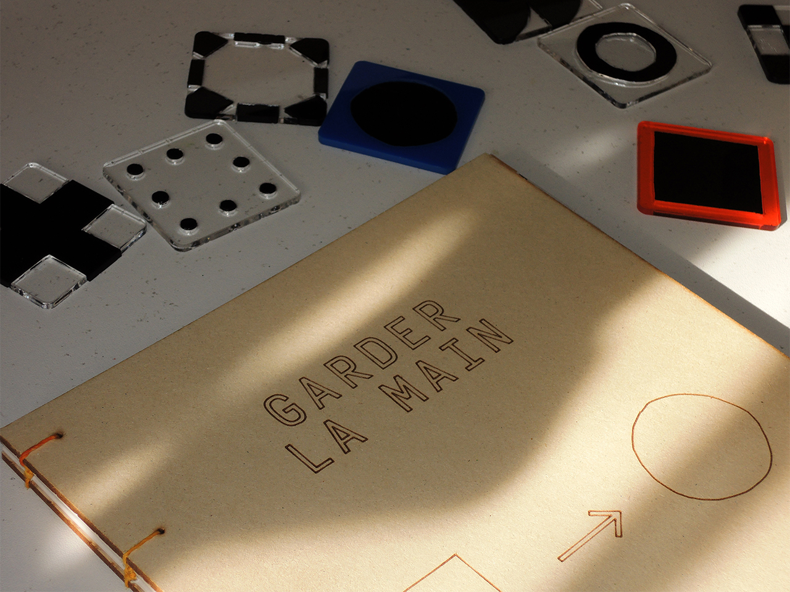
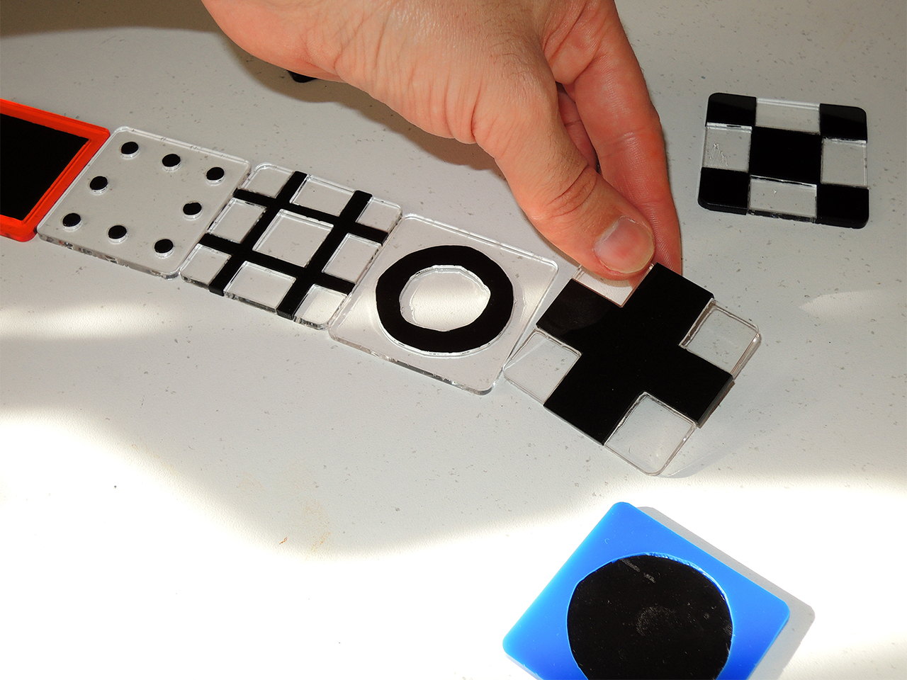
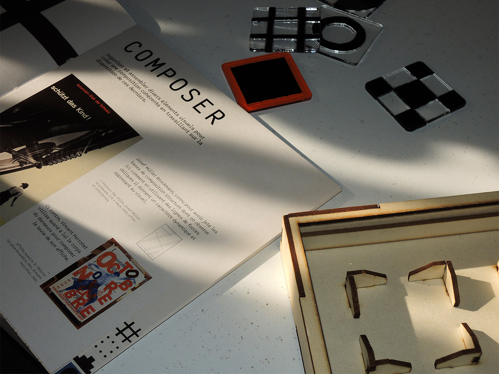
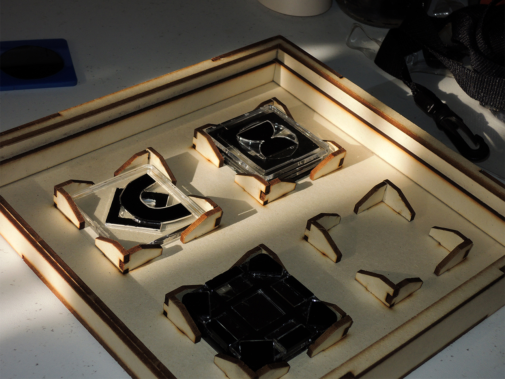
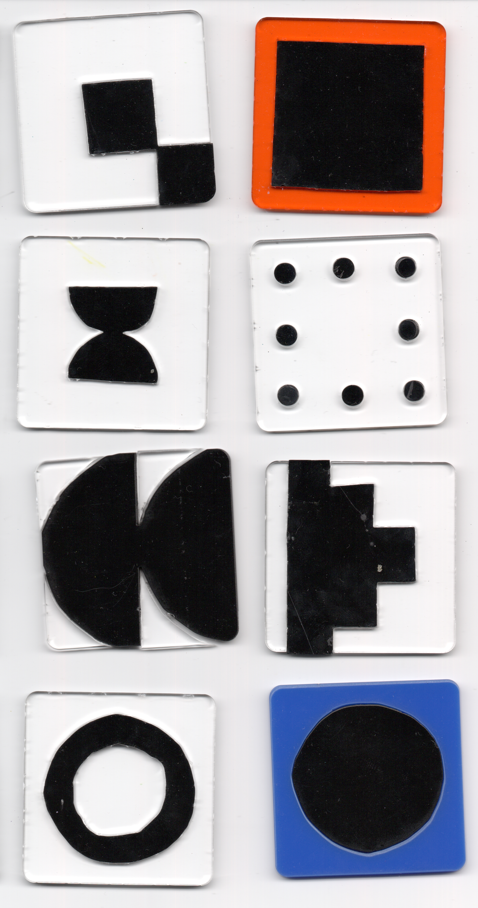
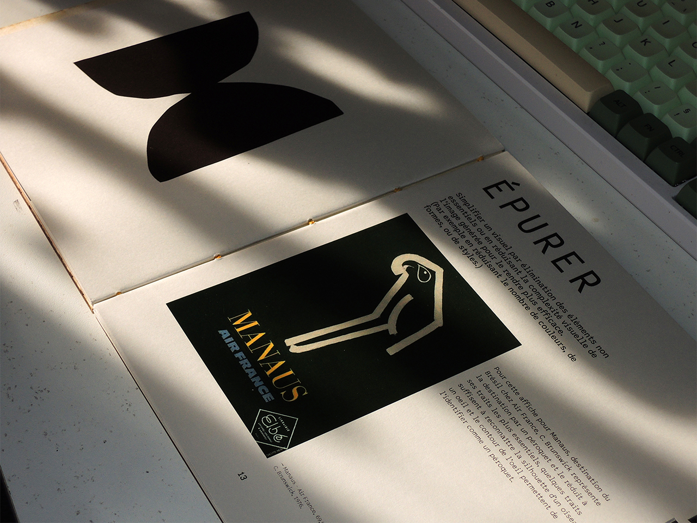
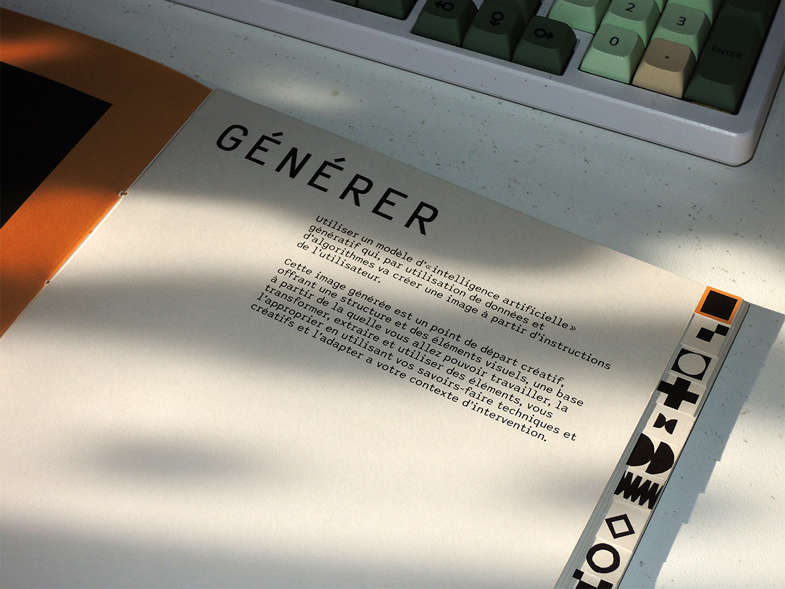
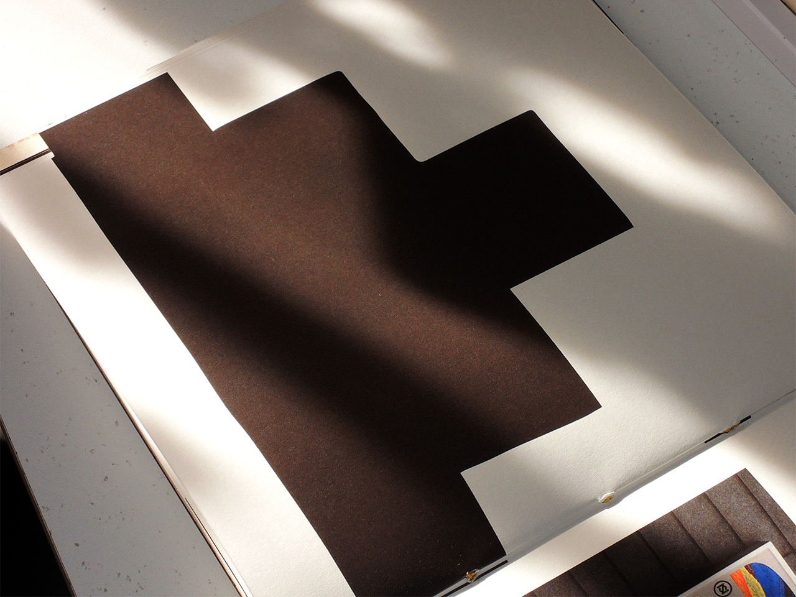
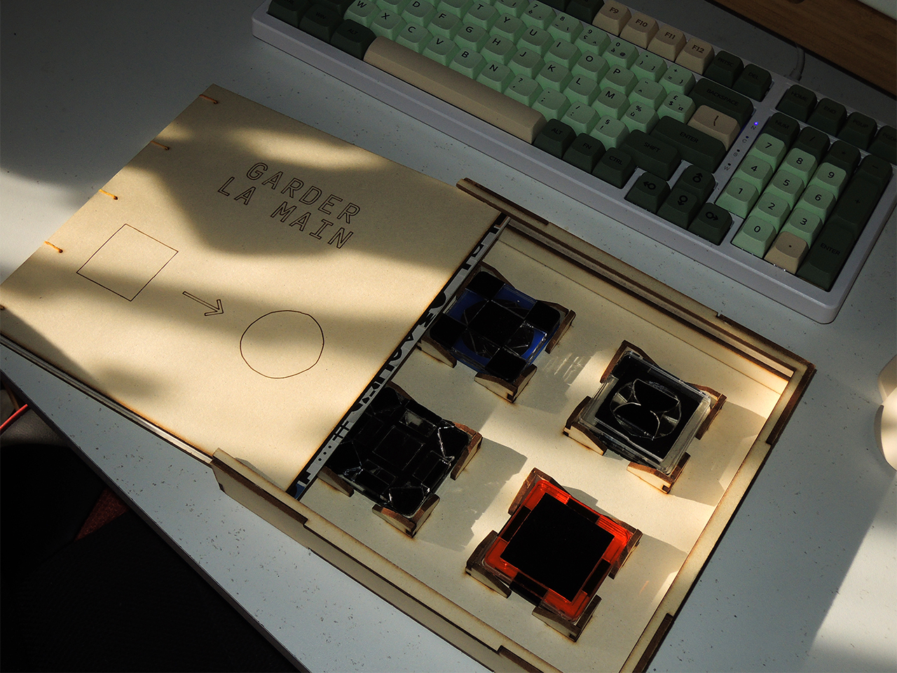
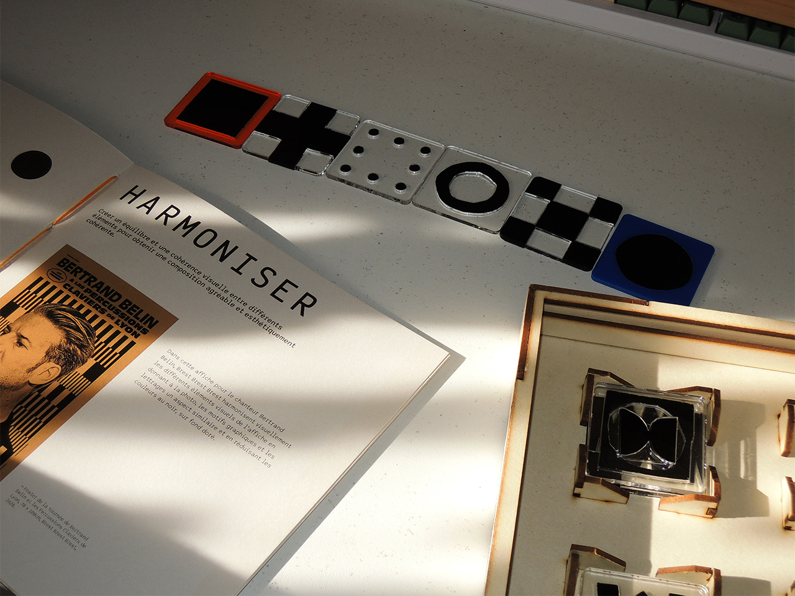

« Garder la main » est un kit destiné aux graphistes ou créateurs visuels voulant employer de l’IA générative d’images dans leurs créations.
Le point de départ de ce kit est le parallèle entre l’image générer par IA et un Standard en Jazz : Une composition qui offre une base propice à l’improvisation et à l’appropriation. Le standard permet d’exprimer la créativité et la personnalité du musicien. Ici, les images générés par IA sont un point de départ créatif que le graphiste doit retravailler en plusieurs étapes afin d’apporter sa singularité, sa sensibilité et son expertise graphique afin de l’adapter à un contexte spécifique de design.
Le kit est composé de tuiles en plexiglass réalisés en découpe laser. Chaque étape de création est représenté par une tuile et un pictogramme associé, à l’esthétique inspiré de l’art concret. Les graphistes peuvent ainsi réfléchir à la façon dont ils s’approprient les images générées par IA en manipulant ces tuiles.
L’ensemble du kit, allant du travail typographique de l’édition (le manuel), aux tuiles et leurs pictogrammes ont étés réalisés sur la même grille de construction, unifiant ainsi les éléments du Kit.









